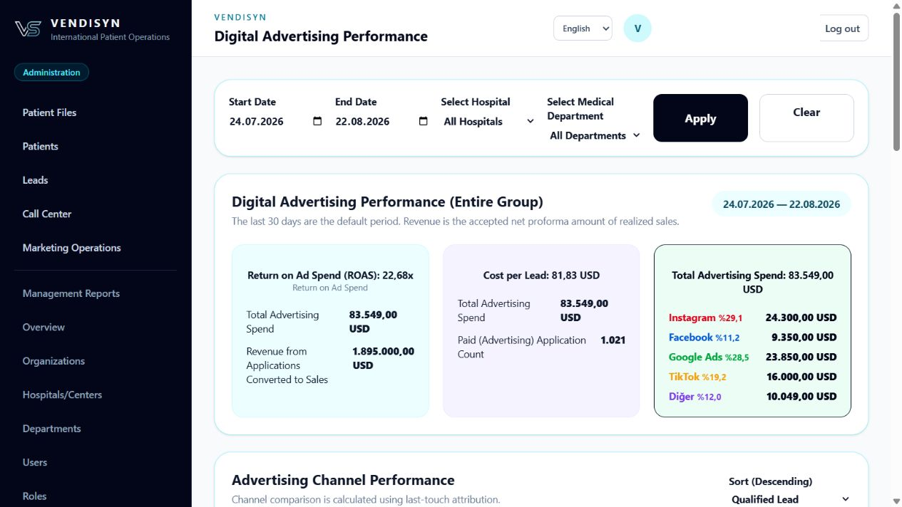
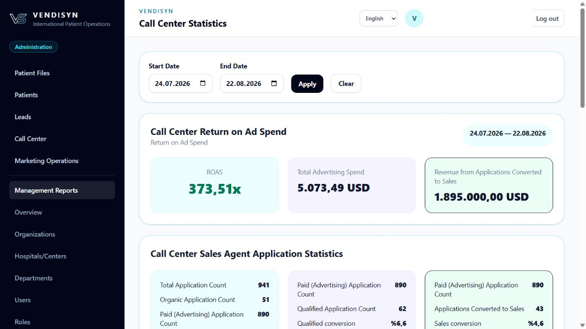
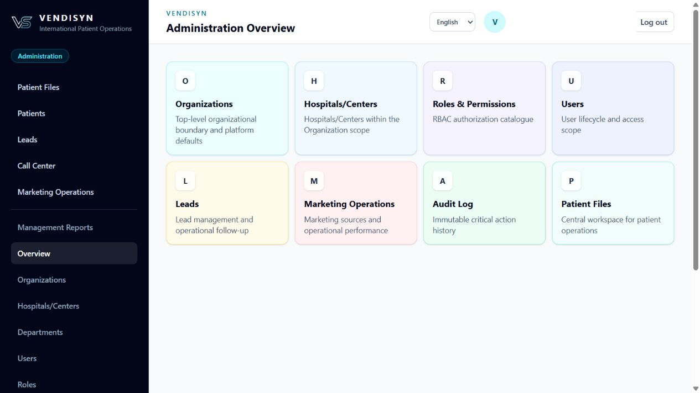
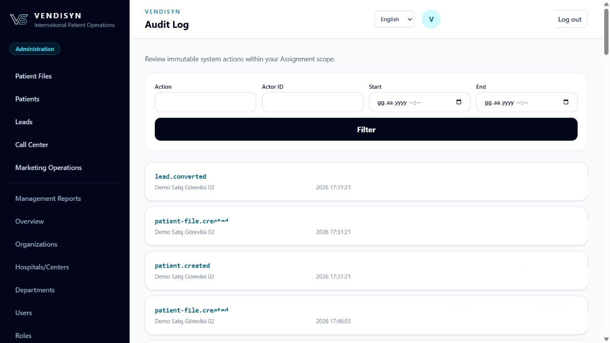
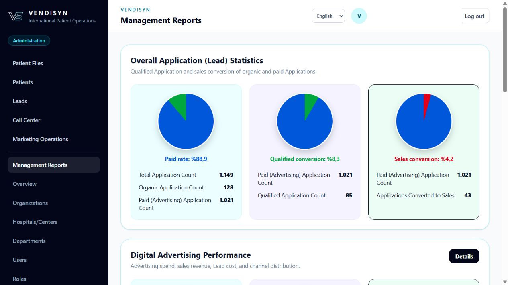

The platform
One operational backbone, configured for your institution.
PATIENT FILE
The Patient File is the center
What ‘separate for every hospital’ means
Connected operational modules
What makes VENDISYN different?
Five capabilities. One measurable operation.
See the real VENDISYN interface in the language selected on this website.
01
Measurable digital advertising performance
Track paid leads from advertising source through qualification, Patient File, sale and HBYS registration; compare channel and regional performance.

02
Outbound call center performance
Measure first-call time, outbound call activity, qualification and sales conversion across the call center team.

03
Flexible architecture for every institution
Configure organizations, hospitals, departments, roles and permissions independently, with provider-neutral integration boundaries.

04
Data security and complete audit trail
Role-based access, institutional data boundaries and immutable critical action history keep operations controlled and traceable.

05
End-to-end management reporting
Turn lead quality, advertising performance, response time, workload and sales conversion into decision-ready management information.

Designed for integration—not locked to one vendor
HBYSHospital PBXWhatsAppSMSE-mail